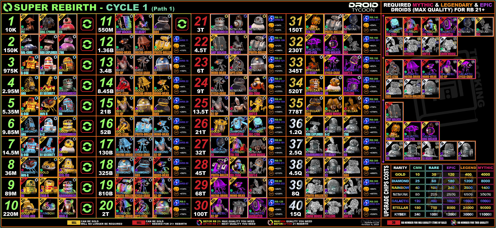

Rebirth-Listen
Alle Rebirth-Anforderungen im WalFischBaby-Design. Wähle unten den gewünschten Cycle.
REBIRTH
Cycle 1
Rebirth-Anforderungen für Cycle 1.

Alle Rebirth-Anforderungen im WalFischBaby-Design. Wähle unten den gewünschten Cycle.
Rebirth-Anforderungen für Cycle 1.
